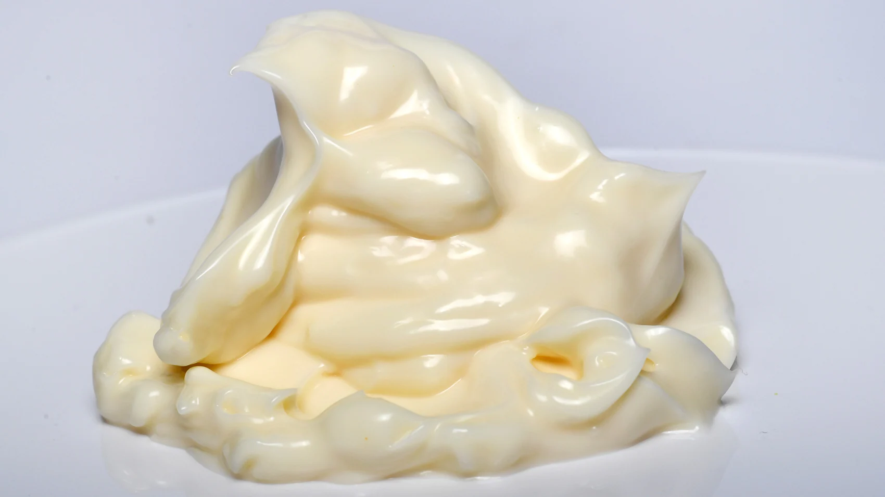

MayoScream Recipe:

Description:
Whats better than mayonnaise you ask? MORE mayonnaise this simple but unique dish will make you stop and think to yourself "how did I never think of something this simple yet amazing before!"
but fear not because I (the mayonnaise expert) will bestow to you the secret recipse for this godly dish.
Ingredients:
- mayonnaise (must be near expiration date for optimum flavor)
- mayonnaise (must be same brand/bottle as the first one)
- After putting the second batch of mayonnaise on top of the first one, YOU MUST and I repeat YOU MUST mix them thoroughly or the recipe will be ruined